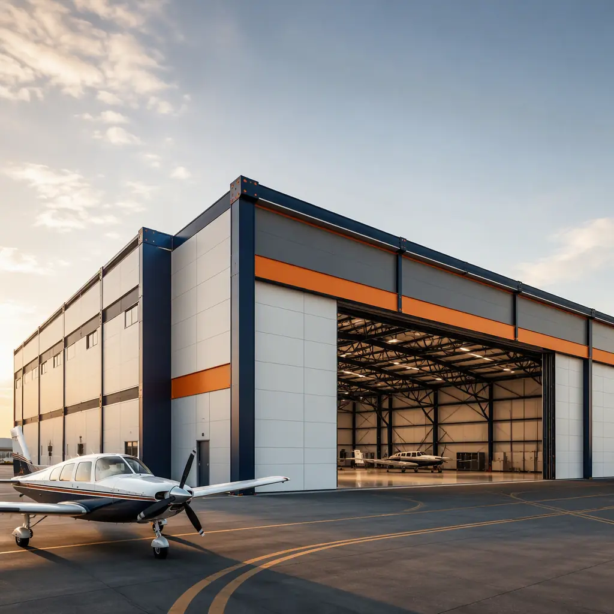
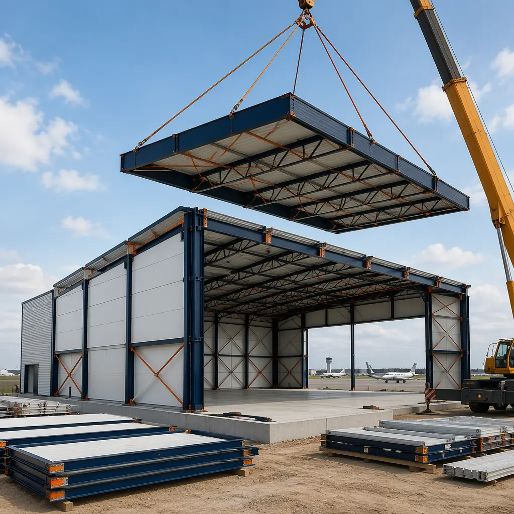
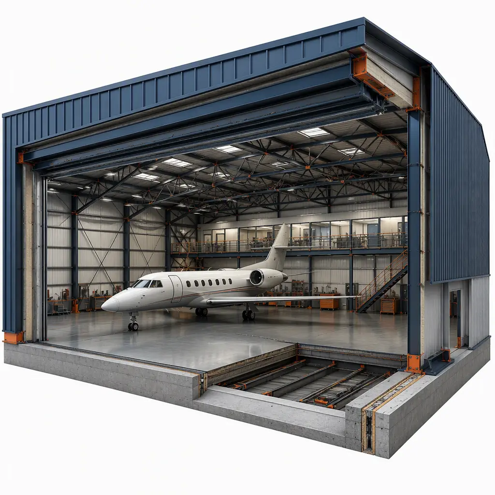
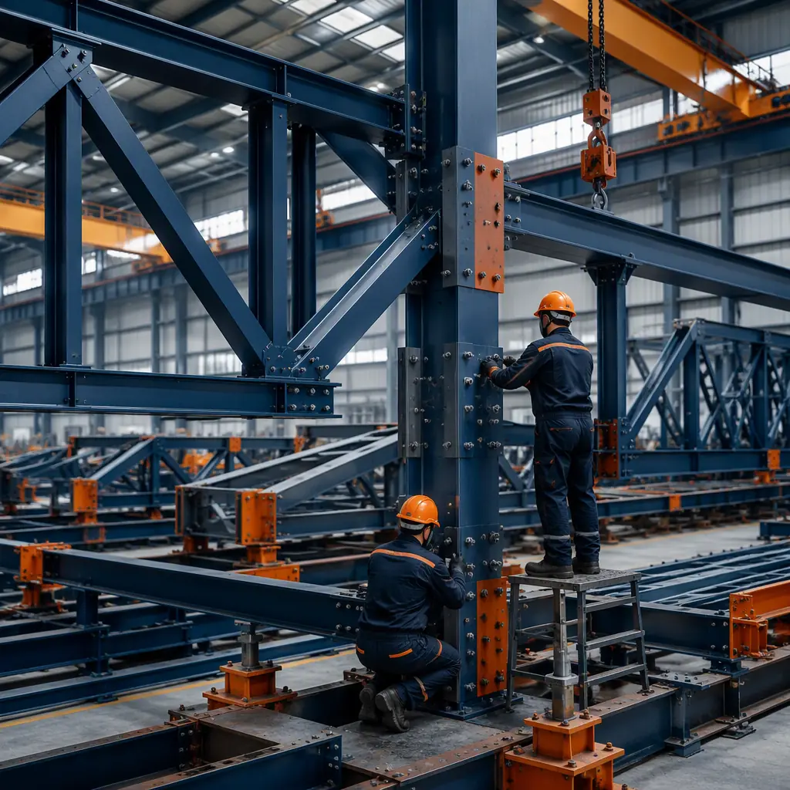

Aircraft hangars occupy a unique position in commercial construction: they combine the largest clear-span structural requirements of any common building type with tight airport-side schedule windows, security constraints, and apron operations that cannot stop while you build. A T-hangar needs a 40–45 ft clear door opening per unit; a corporate hangar for a Gulfstream G650 requires a 90–110 ft clear span with 28–30 ft of tail clearance; a narrow-body MRO (maintenance, repair, and overhaul) hangar demands 150–200 ft of clear span with 45–50 ft tail height. Conventional steel erection delivers these spans with 12–18 months of field work. Modular prefabricated construction manufactures the same clear-span structure as bolted steel-frame modules and pre-engineered trusses in a factory — parallel to apron paving and utility work — compressing total delivery to 6–10 months with a 15–25% building cost reduction. The approach extends the same factory-built logic we document for modular airport and aviation facility construction to the hangar program specifically.

Why Hangar Construction Is a Structural and Schedule Problem
Hangars fail conventional delivery for three compounding reasons:
- Clear-span structure dominates the critical path. The primary structure — rigid frames, trusses, or space frames spanning 60–200 ft with no intermediate columns — is fabricated off site in any delivery method, but conventional erection sequences it on site behind foundations and slab work, then waits for crane availability and steel delivery windows. Modular delivery fabricates the entire structural package as factory modules with pre-engineered trusses, so the field only performs bolted connections — the same parallel-schedule logic we detail for modular steel construction.
- Door systems are long-lead items. Hangar doors — bifold, sliding, or hydraulic — are fabricated to order with 16–30 week lead times regardless of building method. A conventional schedule orders doors only after the structure design is finalized; modular delivery freezes the door rough-opening in the factory module design, so the door lead time runs concurrent with module fabrication rather than after it.
- Airport operations tolerate no shutdown. Hangar projects sit on active aprons with taxiway movements, security perimeters, and often FAA grant assurances governing construction phasing. Factory-built modules minimize the time crews occupy the apron, cutting the disruption windows that drive conventional hangar projects over budget. Security and phasing requirements for aviation sites are covered in our guide to permitting and zoning for complex sites.


Hangar Types — What Each Program Requires
The hangar market divides into three distinct building programs, each with different structural and module strategies:
T-Hangar Parks — The Repeatable Module
T-hangars for general aviation are the most modular-friendly hangar type: nested units of 40–45 ft wide by 30–35 ft deep per aircraft, built in rows of 4–12 units. A conventional T-hangar row takes 4–6 months of steel erection and skinning; a factory-built row of bolted steel-frame modules with pre-engineered trusses sets in 2–4 weeks of crane work. Because every unit repeats the same design, a park of 20, 50, or 100 units amortizes engineering across the fleet — the same network-standardization economics we document for multi-site RFP procurement. Typical cost for a single T-hangar unit runs $70,000–$120,000 in modular delivery versus $90,000–$150,000 conventionally.
Corporate & Executive Hangars
Corporate hangars for business jets need a 90–110 ft clear span, 28–30 ft tail height, and 20,000–40,000 sq ft of combined hangar and attached office/shop space. The clear-span hangar volume is built from factory truss modules, while the attached office, crew lounge, and maintenance shop are conventional modular units delivered in the same shipment — so the entire facility lands in one crane campaign. The office module package follows the same factory-built interior approach we describe for modular office buildings.
MRO & Heavy Maintenance Facilities
MRO hangars for narrow-body aircraft (Boeing 737, Airbus A320) are the largest hangar type: 150–200 ft clear span, 45–50 ft tail height, 120–150 ft depth, plus mezzanine shops, parts storage, and maintenance pits. These are delivered as large-bay modular structures — factory-fabricated trusses and column modules erected with bolted connections, with mezzanine and shop modules fitted inside. The heavy-equipment density of an MRO interior parallels what we cover in modular heavy industrial construction, and the phased expansion capability — adding bays as the fleet grows — is the same logic we document for modular building additions and expansions.
Cost Structure — Modular vs. Conventional Hangar Delivery
| Hangar Type | Conventional Cost | Modular Cost | Schedule |
|---|---|---|---|
| T-Hangar (per unit, 40–45 ft span) | $90,000–150,000 | $70,000–120,000 | 8–12 weeks |
| Corporate Hangar (90–110 ft span, 20,000 sq ft) | $3.5–5.5M | $2.9–4.4M | 6–9 months |
| MRO Hangar (150–200 ft span, 80,000 sq ft) | $14–22M | $11–17M | 10–14 months |
| Field labor, crane & weather risk | 12–18% of budget | 6–10% of budget | Concurrent with factory |
The 15–25% building cost reduction compounds with 3–6 months of earlier hangar revenue — material for a T-hangar park or FBO where lease income starts the day the doors open. For a full treatment of modular project economics, see our 2026 modular cost guide and our developer's ROI analysis.
Doors, Fire Protection & Regulatory Compliance
Hangar code compliance is denser than most industrial buildings. NFPA 409 governs hangar fire protection — Group I and II hangars typically require foam or deluge systems, with Group III allowing sprinkler alternatives — and IBC 412 sets the aircraft hangar occupancy requirements including fuel-resistant floor slabs and ventilation. Modular delivery supports compliance through factory-documented fabrication: fire-rated assemblies, door rough-openings sized to the specified hangar door, and MEP systems are built and inspected to code at the factory, with the documentation package delivered for the AHJ's field inspection. Hangar door systems — bifold, sliding, or hydraulic — are coordinated into the module design so the long-lead door order runs concurrent with fabrication. For the fire and safety framework that applies to hangar programs, see our modular construction fire safety guide.

Apron Integration & Phased Expansion
Hangar projects live or die on apron coordination. Modular delivery compresses the building's footprint of time on the apron: modules arrive on flatbeds, set in days, and connect in weeks, after which apron paving, fuel systems, and security fencing can proceed without building crews competing for the same space. For FBOs and flight schools expanding capacity, modular hangars support phased growth — a T-hangar row or corporate hangar bay can be added without disrupting occupied units, the same expansion logic we document for modular additions and expansions. The logistics of moving large modules to airport sites — including escort and security coordination — follows the framework in our modular transportation and logistics guide.
Structural Engineering — Frames, Trusses & the Foundation That Carries Them
The hangar's clear span is delivered by one of three structural systems, and modular fabrication supports all of them. Rigid steel frames — columns and rafters moment-connected at the haunch — serve 60–120 ft spans efficiently and are the most factory-friendly system, since each frame ships as two or three bolted pieces. Open-web steel trusses extend the clear span to 150–200 ft for MRO bays while keeping member sizes shippable, and space frames handle the largest spans with the lightest steel weight. Whatever the system, the factory fabricates, fits, and trial-erects the frame before shipping, so field connections are bolted, not welded — eliminating the site welding that extends conventional steel schedules. Foundations are the one element that cannot be modularized, and they are the critical-path item the schedule must protect: aircraft hangar slabs carry concentrated wheel loads (a 737-800 main gear imposes roughly 45,000 lb per strut), so the slab and its subgrade must be engineered and poured in the first season while modules are built in parallel. Foundation and slab strategy for heavy, concentrated loads is covered in our modular foundation systems guide.
Hangar MEP — Power, Lighting & Ground Support Systems
Hangar mechanical, electrical, and plumbing systems are factory-installed in modular delivery rather than roughed in the field. Electrical rooms and switchgear modules arrive pre-wired and tested; LED high-bay lighting with daylight controls is pre-mounted in the truss modules, cutting a scaffold-intensive field trade; and compressed air, welding gas, and shop power are factory-routed for MRO and maintenance operations. Fuel-resistant floor coatings, wash-down drainage, and ventilation for running engines are coordinated at module design stage, and the mechanical mezzanine — office, break room, and parts storage — is itself a modular unit that slots into the clear-span volume. The systems-integration discipline is the same one we document for modular MEP systems integration, and the lighting and HVAC load profile of a hangar responds well to the energy-efficiency measures we cover in our modular energy efficiency guide.
Multi-Bay Programs & Phased Expansion
Few hangar projects stay single-bay. Flight schools add T-hangar rows as enrollment grows, FBOs add corporate bays, and MRO operators add maintenance bays as contracts accumulate. Modular delivery supports multi-bay and phased programs natively: the factory produces bays as repeatable modules with standardized connection details, so a second or third bay bolts onto the first without re-engineering, and future bays can be manufactured and shipped in a later season without disturbing occupied hangars. This phasing logic — and its financing implications — follow our modular additions and expansions guide, and the warranty and structural-guarantee structure for phased steel-frame programs is covered in our modular construction warranties guide.
T-Hangar Parks & the FBO Revenue Model
For FBOs and airport authorities, the T-hangar park is a revenue asset as much as a building program. Hangar rental rates at general aviation airports commonly run $400–$1,200 per month per unit depending on market and aircraft size, and waiting lists at many reliever airports stretch for years — which is why the schedule matters as much as the price. A modular T-hangar row delivered in 8–12 weeks starts generating lease revenue three to six months before a conventionally erected row, and the faster payback improves the project's debt service coverage, making the financing easier to secure. The revenue-side economics of modular delivery — and how accelerated occupancy improves project returns — are covered in our developer's ROI analysis, and the insurance and risk structure for aviation facilities follows our modular construction insurance and risk management guide.
Is Modular Right for Your Hangar Project?
Modular hangar delivery delivers the strongest value for T-hangar parks and FBO expansions where repeatable units amortize engineering, corporate hangars combining clear-span volume with attached office modules, MRO facilities where schedule windows align with maintenance contracts, and any airport site where apron disruption must be minimized. For very large wide-body MRO hangars beyond 250 ft of clear span, a hybrid approach — modular office, shop, and mezzanine packages with conventional long-span steel for the main bay — captures most of the schedule benefit while keeping the structural package conventional. Defense and government hangar programs follow the same procurement path we document for modular military and defense infrastructure.